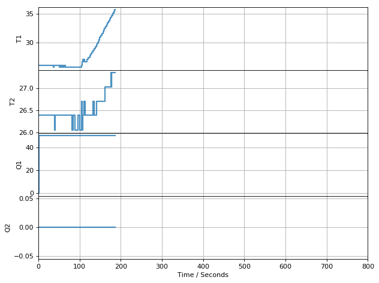
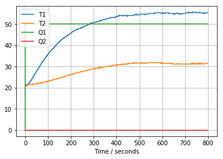

Step Testing
Contents
1.4. Step Testing#
%matplotlib inline
import matplotlib.pyplot as plt
import pandas as pd
from tclab import TCLab, clock, Historian, Plotter
1.4.1. Executing the Step Test#
1.4.1.1. Verify an Initial Steady State#
A step test assumes the system is initially at steady state. In the case of the Temperature Control Lab, the initial steady with no power input would be room temperature. It generally takes 10 minutes or more to reach steady state. We’ll do a measurement to confirm the initial temperature.
lab = TCLab()
print(lab.T1, lab.T1)
lab.close()
TCLab version 0.4.9
Arduino Leonardo connected on port /dev/cu.usbmodem2101 at 115200 baud.
TCLab Firmware 1.5.1 Arduino Leonardo/Micro.
26.06 26.06
TCLab disconnected successfully.
1.4.1.2. Conduct the Experiment#
# experimental parameters
Q1 = 50
tfinal = 800
# perform experiment
with TCLab() as lab:
h = Historian(lab.sources)
p = Plotter(h, tfinal)
lab.Q1(0)
for t in clock(tfinal):
p.update(t)
lab.Q1(Q1)

---------------------------------------------------------------------------
OSError Traceback (most recent call last)
~/opt/anaconda3/lib/python3.7/site-packages/serial/serialposix.py in read(self, size)
492 break # timeout
--> 493 buf = os.read(self.fd, size - len(read))
494 # read should always return some data as select reported it was
OSError: [Errno 6] Device not configured
During handling of the above exception, another exception occurred:
SerialException Traceback (most recent call last)
<ipython-input-4-7eb0f8936a68> in <module>
10 for t in clock(tfinal):
---> 11 p.update(t)
12 lab.Q1(Q1)
~/opt/anaconda3/lib/python3.7/site-packages/tclab/historian.py in update(self, tnow)
288 def update(self, tnow=None):
--> 289 self.historian.update(tnow)
290
~/opt/anaconda3/lib/python3.7/site-packages/tclab/historian.py in update(self, tnow)
147 if valuefunction:
--> 148 v = valuefunction()
149 if isinstance(v, Iterable):
~/opt/anaconda3/lib/python3.7/site-packages/tclab/tclab.py in scan(self)
209 #self.send('SCAN')
--> 210 T1 = self.T1 # float(self.receive())
211 T2 = self.T2 # float(self.receive())
~/opt/anaconda3/lib/python3.7/site-packages/tclab/tclab.py in T1(self)
156 """Return a float denoting TCLab temperature T1 in degrees C."""
--> 157 return self.send_and_receive('T1', float)
158
~/opt/anaconda3/lib/python3.7/site-packages/tclab/tclab.py in send_and_receive(self, msg, convert)
147 self.send(msg)
--> 148 return convert(self.receive())
149
~/opt/anaconda3/lib/python3.7/site-packages/tclab/tclab.py in receive(self)
139 """Return a string message received from the TCLab firmware."""
--> 140 msg = self.sp.readline().decode('UTF-8').replace('\r\n', '')
141 if self.debug:
~/opt/anaconda3/lib/python3.7/site-packages/serial/serialposix.py in read(self, size)
508 if e.errno not in (errno.EAGAIN, errno.EALREADY, errno.EWOULDBLOCK, errno.EINPROGRESS, errno.EINTR):
--> 509 raise SerialException('read failed: {}'.format(e))
510 except select.error as e:
SerialException: read failed: [Errno 6] Device not configured
During handling of the above exception, another exception occurred:
OSError Traceback (most recent call last)
~/opt/anaconda3/lib/python3.7/site-packages/serial/serialposix.py in write(self, data)
536 try:
--> 537 n = os.write(self.fd, d)
538 if timeout.is_non_blocking:
OSError: [Errno 6] Device not configured
During handling of the above exception, another exception occurred:
SerialException Traceback (most recent call last)
<ipython-input-4-7eb0f8936a68> in <module>
10 for t in clock(tfinal):
11 p.update(t)
---> 12 lab.Q1(Q1)
~/opt/anaconda3/lib/python3.7/site-packages/tclab/tclab.py in __exit__(self, exc_type, exc_value, traceback)
98
99 def __exit__(self, exc_type, exc_value, traceback):
--> 100 self.close()
101 return
102
~/opt/anaconda3/lib/python3.7/site-packages/tclab/tclab.py in close(self)
121 global _connected
122
--> 123 self.Q1(0)
124 self.Q2(0)
125 self.send_and_receive('X')
~/opt/anaconda3/lib/python3.7/site-packages/tclab/tclab.py in Q1(self, val)
192 else:
193 msg = 'Q1' + sep + str(clip(val))
--> 194 return self.send_and_receive(msg, float)
195
196 def Q2(self, val=None):
~/opt/anaconda3/lib/python3.7/site-packages/tclab/tclab.py in send_and_receive(self, msg, convert)
145 def send_and_receive(self, msg, convert=str):
146 """Send a string message and return the response"""
--> 147 self.send(msg)
148 return convert(self.receive())
149
~/opt/anaconda3/lib/python3.7/site-packages/tclab/tclab.py in send(self, msg)
131 def send(self, msg):
132 """Send a string message to the TCLab firmware."""
--> 133 self.sp.write((msg + '\r\n').encode())
134 if self.debug:
135 print('Sent: "' + msg + '"')
~/opt/anaconda3/lib/python3.7/site-packages/serial/serialposix.py in write(self, data)
569 # https://www.python.org/dev/peps/pep-0475.
570 if e.errno not in (errno.EAGAIN, errno.EALREADY, errno.EWOULDBLOCK, errno.EINPROGRESS, errno.EINTR):
--> 571 raise SerialException('write failed: {}'.format(e))
572 except select.error as e:
573 # this is for Python 2.x
SerialException: write failed: [Errno 6] Device not configured
1.4.1.3. Verify the Experimental Data#
t = h.t
T1 = h.T1
T2 = h.T2
Q1 = h.Q1
Q2 = h.Q2
plt.plot(t, T1, t, T2, t, Q1, t, Q2)
plt.legend(['T1','T2','Q1','Q2'])
plt.xlabel('time / seconds')
plt.grid()

1.4.1.4. Convert to a DataFrame#
import pandas as pd
df = pd.DataFrame([t, T1, T2, Q1]).T
df.columns = ['Time', 'T1', 'T2', 'Q1']
df = df.set_index('Time')
df.plot(grid=True)
<matplotlib.axes._subplots.AxesSubplot at 0x10fc2b748>
1.4.1.5. Save DataFrame as a .csv file#
df.to_csv('Step_Test_Data.csv')
1.4.1.6. Verify the Data File#
%matplotlib inline
pd.read_csv('Step_Test_Data.csv').set_index('Time').plot(grid=True)
<matplotlib.axes._subplots.AxesSubplot at 0x11615e208>
df.head()
| T1 | T2 | Q1 | |
|---|---|---|---|
| Time | |||
| 0.0 | 20.9 | 21.54 | 0.0 |
| 0.0 | 20.9 | 21.54 | 50.0 |
| 1.0 | 20.9 | 21.54 | 50.0 |
| 2.0 | 20.9 | 21.54 | 50.0 |
| 3.0 | 20.9 | 21.54 | 50.0 |
df.tail()
| T1 | T2 | Q1 | |
|---|---|---|---|
| Time | |||
| 795.00 | 55.38 | 31.53 | 50.0 |
| 796.00 | 55.38 | 31.53 | 50.0 |
| 797.00 | 55.38 | 31.53 | 50.0 |
| 798.01 | 55.38 | 31.53 | 50.0 |
| 799.00 | 55.38 | 31.53 | 50.0 |